Tuproq ma'lumotlari asosida ekin tavsiya qiluvchi sun'iy intellekt ilovasi
EkinAI tuproq namunasidagi pH, elektr o'tkazuvchanlik, azot, fosfor, kaliy va boshqa ko'rsatkichlarni tahlil qilib, har bir ekin uchun moslik darajasini ko'rsatadigan mobil ilova.
Tuproqni bilmasdan ekin tanlash qimmatga tushishi mumkin
Muammo
Tuproqning kimyoviy va fizik xususiyatlarini bilmasdan ekin tanlash hosildorlikning pasayishiga olib kelishi mumkin.
Yechim
EkinAI tuproq ko'rsatkichlarini yig'ib, sun'iy intellekt modeli yordamida tahlil qiladi va moslik darajasini hisoblaydi.
Tizim qanday ishlaydi
Namuna va joylashuv
Tuproq namunasi olinadi, ilova GPS orqali namuna joylashuvini belgilaydi.
Ma'lumot kiritish
Sensordan jonli o'qish, Excel fayldan yuklash yoki qo'lda kiritish.
Ko'rsatkichlarni tekshirish
18 ta tuproq xususiyati ko'rib chiqiladi, kerak bo'lsa tahrirlanadi.
AI tahlili
TabNet modeli ma'lumotlarni qurilma ichida tahlil qiladi.
Tavsiya va natija
Har bir ekin uchun mustaqil moslik foizi va tahlil natijasi beriladi.
EkinAI ilovasining imkoniyatlari
Jonli sensor o'qish
RS485/Modbus tuproq sensori USB-OTG orqali ulanadi.
Excel fayldan yuklash
N, P, K, pH va EC ustunlari avtomatik aniqlanadi.
Qo'lda kiritish
5 ta asosiy ko'rsatkichni qo'lda kiritish imkoniyati.
Xususiyat ta'siri
Qaysi ko'rsatkich natijaga qanchalik ta'sir qilgani grafikda.
GPS va xarita
Namuna joylashuvi sun'iy yo'ldosh xaritasida ko'rsatiladi.
Tarix va statistika
Saqlangan tahlillar dashboard ko'rinishida kuzatiladi.
3 til qo'llab-quvvatlanadi
O'zbek, ingliz va rus tillarida ishlaydi.
Ilova ekranlari
Mobil ilovaning ishlash jarayonlaridan skrinshotlar
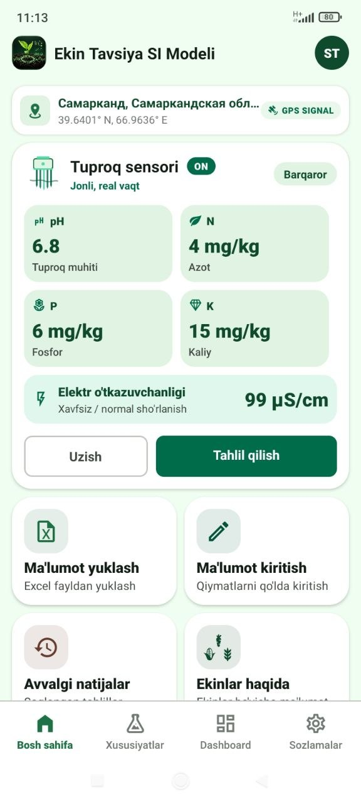
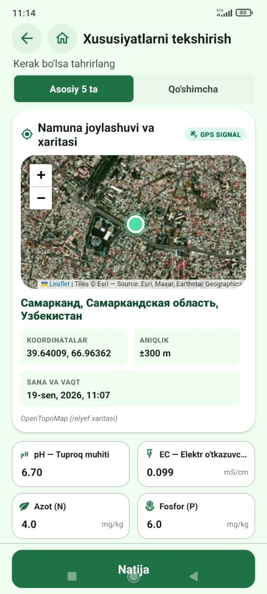
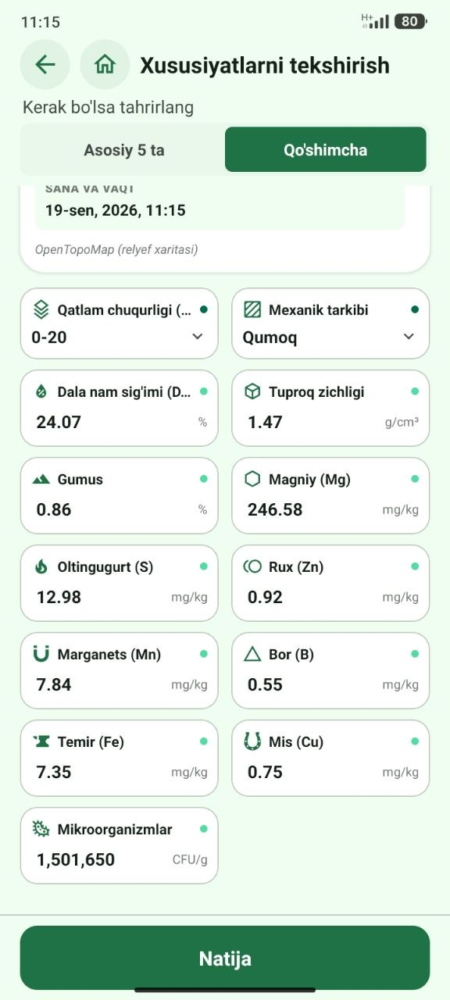
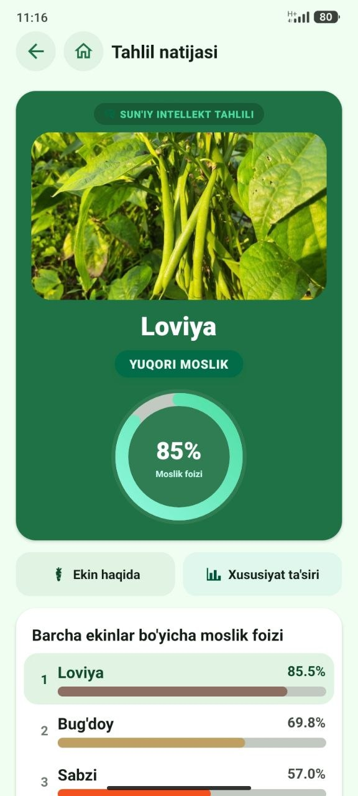
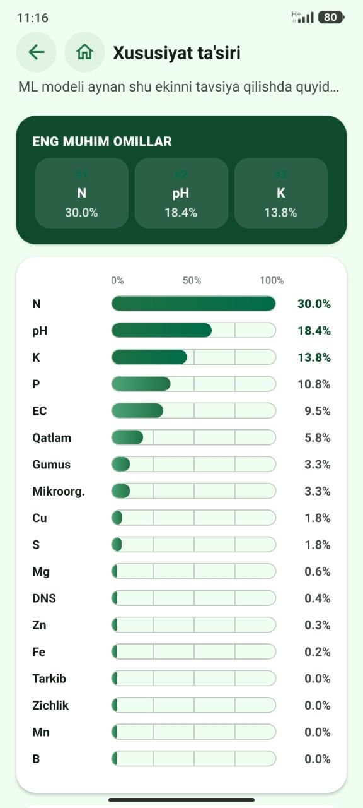
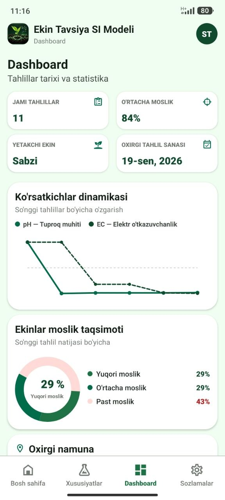
Tuproq sensori va mobil ilova integratsiyasi
Ilova RS485/Modbus protokoli asosida ishlaydigan tuproq sensori bilan USB-OTG kabeli orqali bevosita bog'lanadi.
Model tuproq ma'lumotlarini qanday tahlil qiladi
TabNet — e'tibor (attention) mexanizmiga asoslangan chuqur o'rganish arxitekturasi. Model haqiqiy tuproq namunalari asosida o'qitilgan va butunlay qurilma ichida ishlaydi.
Model tavsiya qiladigan ekinlar
Har bir ekin uchun tuproqqa nisbatan afzalliklar qisqacha tavsiflangan.
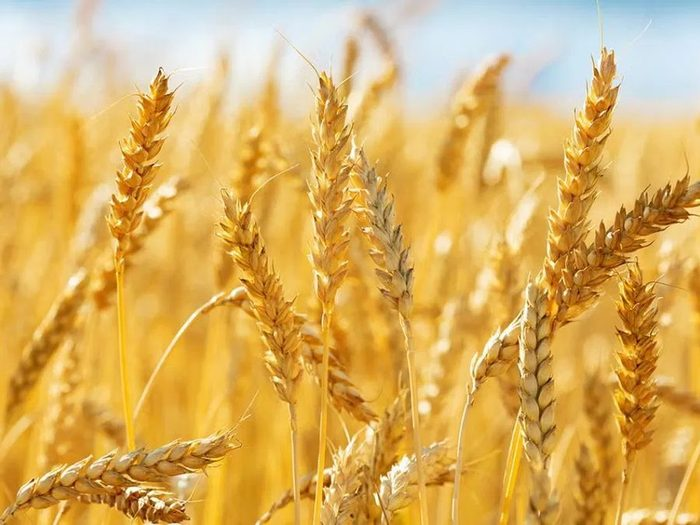
Bug'doy
Keng diapazonli tuproq sharoitlariga moslashuvchan asosiy don ekini.
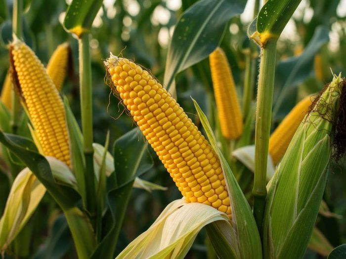
Makkajo'xori
Yuqori azot va kaliy talab qiladigan, issiqsevar don ekini.
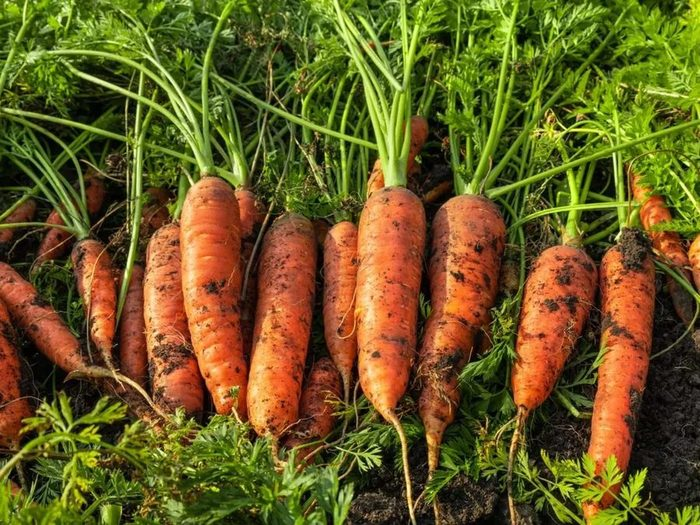
Sabzi
Yumshoq, yaxshi drenajlangan, kam tosh aralashgan tuproqda yaxshi rivojlanadi.
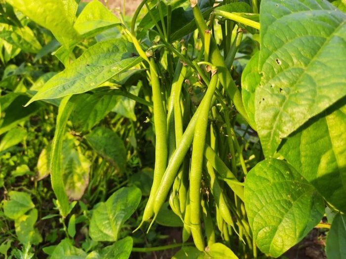
Loviya
Azotni o'zlashtiruvchi dukkakli ekin, o'rtacha namlik va neytral pH ni yaxshi ko'radi.
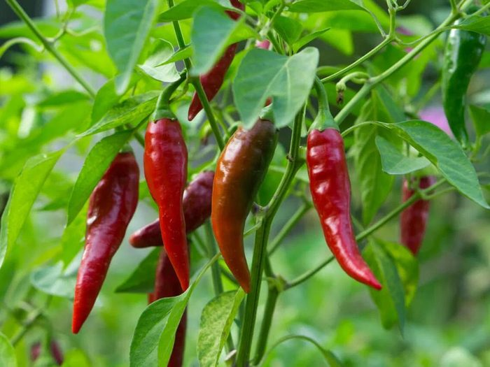
Qalampir
Issiqlikni va yaxshi drenajni yaxshi ko'radigan sabzavot ekini.
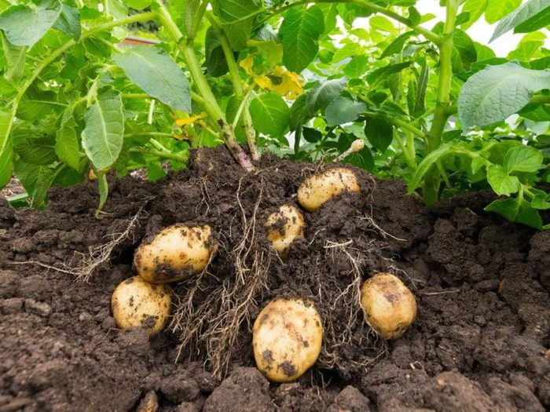
Kartoshka
Yumshoq, gumusga boy, kislotaliroq tuproqda yaxshi hosil beradi.
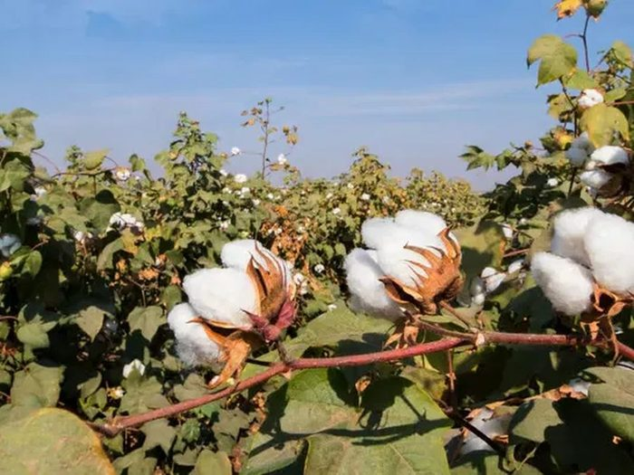
Paxta
Chuqur ildiz tizimiga ega, o'rtacha sho'rlanishga chidamli issiqsevar ekin.
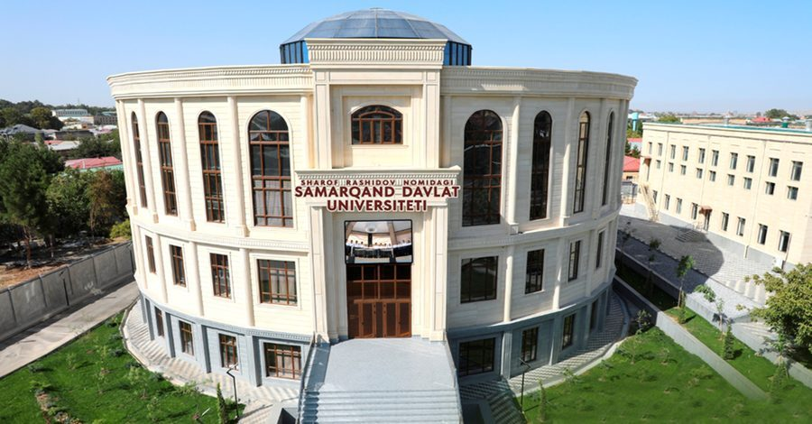
SamDU Sun'iy Intellekt Laboratoriyasi
Loyiha Samarqand Davlat Universiteti Sun'iy Intellekt Laboratoriyasida amaliy tadqiqot va mobil dasturlash tajribasi kesishmasida ishlab chiqilmoqda.
Haqiqiy namunalarModel haqiqiy tuproq namunalari asosida o'qitilgan va sinovdan o'tkazilgan.
To'liq offlineTahlil qurilma ichida bajariladi, tuproq ma'lumotlari serverga yuborilmaydi.
Tekshirilishi mumkinModel va oldindan ishlov berish usullari ilmiy maqolada hujjatlashtirilgan.
Loyiha kodi yoki ilmiy maqola bilan qiziqasizmi?
EkinAI — SamDU Sun'iy Intellekt Laboratoriyasida davom etayotgan tadqiqot loyihasi.